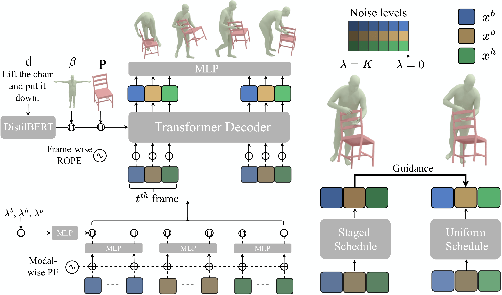

Unleashing Guidance Without Classifiers for Human-Object Interaction Animation
Abstract
Generating realistic human-object interaction (HOI) animations remains challenging because it requires jointly modeling dynamic human actions and diverse object geometries. Prior diffusion-based approaches often rely on handcrafted contact priors or human-imposed kinematic constraints to improve contact quality. We propose a data-driven alternative in which guidance emerges from the denoising pace itself, reducing dependence on manually designed priors. Building on diffusion forcing, we factor the representation into modality-specific components and assign individualized noise levels with asynchronous denoising schedules. In this paradigm, cleaner components guide noisier ones through cross-attention, yielding guidance without auxiliary classifiers. We find that this data-driven guidance is inherently contact-aware, and can be further enhanced when training is augmented with a broad spectrum of synthetic object geometries, encouraging invariance of contact semantics to geometric diversity. Extensive experiments show that pace-induced guidance more effectively mirrors the benefits of contact priors than conventional classifier-free guidance, while achieving higher contact fidelity, more realistic HOI generation, and stronger generalization to unseen objects and tasks.
Approach Overview

Gallery of Generation
A person crosses and uncrosses their left leg over their right while seated.
A person turns their body clockwise, crosses their right leg to a different side of a square table from their left leg, sticks their both hands to edge of square school table behind their body and tilts back.
An individual reclines on a yoga ball, extends both legs, and then rises to a standing position.
A person takes a backpack off their left shoulder, puts it on their right shoulder, and walks counterclockwise for a circle.
A person walks forward, grabs and inspects a large torus, then replaces it and returns to their starting point.
A person walks towards a toothpaste, grasps the toothpaste with their right hand, passes the toothpaste towards their front, and puts the toothpaste back on the desk with their right hand.
A person cooks with a pan, switches hands, and adds seasonings.
A person swings a baseball between their hands while walking clockwise, then rubs it in their hands while walking counterclockwise.
An individual grasps a dumbbell with their left hand while extending both legs forward and backward, simultaneously rotating their torso towards the right side.
An individual moves backward, tosses a pillow up with both hands and catches it, throws it upwards again and catches it, then holds it aloft.
Push the largetable, and set it back down.
Lift the plasticbox, rotate the plasticbox, and set it back down.
Lift the whitechair, flip it upside down and place it on top of the table.
Lift the smalltable above your head, walk, and put the smalltable down.
Lift the monitor, move the monitor, and put down the monitor.
Ablation on the Augmentation
A person holds the trash bin in their left hand and empties the trash bin.
w/o augmentation
w/ augmentation
A person with a backpack on their left shoulder stretches their right arm backward, then bends down to touch their right foot with their right hand, and then stands back up.
w/o augmentation
w/ augmentation
A person carries a small box in their left arm, walks counterclockwise, and moves the box up and down with their left hand.
w/o augmentation
w/ augmentation
A person holds a medium box and walks counterclockwise, then carries the medium box while taking small steps in place.
w/o augmentation
w/ augmentation
Once again, the individual places the backpack on the ground, picks it up with their left hand, and proceeds to walk, intermittently changing the hand carrying the backpack.
w/o augmentation
w/ augmentation
Ablation on the Guidance
Kick the largetable, and set it back down.
w/o guidance
w/ guidance
The person puts the right leg on the left leg, and then stands up from the chair and clips the hands in the air.
w/o guidance
w/ guidance
Hold the whitechair and turn it around to face a diffferent orientation.
w/o guidance
w/ guidance
BibTeX
@inproceedings{wang2026unleashing,
title = {Unleashing Guidance Without Classifiers for Human-Object Interaction Animation},
author = {Wang, Ziyin and Xu, Sirui and Guo, Chuan and Zhou, Bing and Gong, Jiangshan and Wang, Jian and Wang, Yu-Xiong and Gui, Liang-Yan},
booktitle = {ICLR},
year = {2026}
}